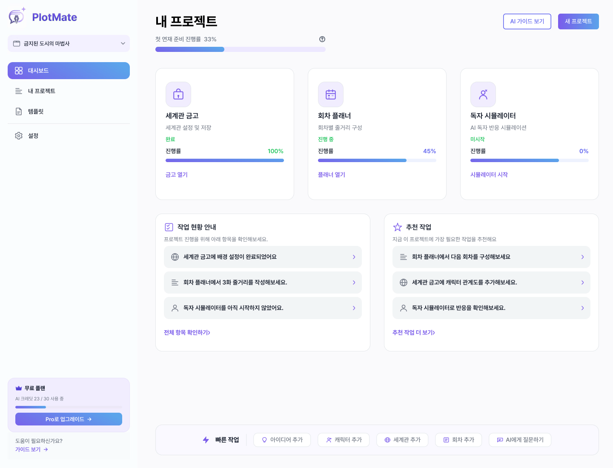

장르 분석 에이전트
작품이 선택한 장르의 문법을 얼마나 잘 따르고 있는지 분석합니다. 독자가 기대하는 재미와 작품만의 차별점을 함께 찾습니다.
웹소설 작가를 위한 AI 기획 워크스페이스
PlotMate는 웹소설 작가를 위한 AI 기반 스토리 기획 워크스페이스입니다. 다섯 명의 전문 에이전트가 장르, 설정, 전개, 복선, 초고를 각자의 관점에서 검토하고 제안합니다. AI는 선택지를 넓히고, 최종 결정은 언제나 작가가 내립니다.

회차가 쌓일수록 캐릭터의 외형과 성격, 세계관의 규칙이 조금씩 달라집니다. 작은 설정 오류가 반복되면 이야기의 몰입도까지 흔들립니다.
초반에 심어둔 단서가 늘어날수록 무엇을 언제 회수해야 하는지 관리하기 어려워집니다. 놓친 떡밥은 이야기의 설득력과 독자의 신뢰를 떨어뜨립니다.
장르, 주인공, 세계관, 첫 화의 훅까지 한 번에 완성하려 하면 시작 자체가 부담이 됩니다. 정답을 찾느라 오래 고민하다 보면 정작 첫 문장을 쓰지 못한 채 멈추게 됩니다.
PlotMate는 이야기를 대신 쓰지 않습니다. 다섯 명의 전문 에이전트가 각자의 관점에서 작품을 분석하고 선택지를 제안합니다. 필요한 도움은 PlotMate가 연결하고, 이야기의 방향은 작가가 결정합니다.
작품이 선택한 장르의 문법을 얼마나 잘 따르고 있는지 분석합니다. 독자가 기대하는 재미와 작품만의 차별점을 함께 찾습니다.
캐릭터의 외형과 성격, 인물 관계, 세계관 규칙, 고유 용어를 한곳에 정리합니다. 새로운 회차를 작성할 때 기존 설정과 충돌하는 부분이 없는지 비교해 이야기의 일관성을 지켜줍니다.
지금까지 쌓아온 이야기에서 다음에 일어날 수 있는 사건을 찾아냅니다. PlotMate가 여러 갈래의 가능성을 제안하면, 작가는 가장 마음에 드는 길을 선택합니다.
작품 속에 등장한 복선과 미스터리, 아직 설명되지 않은 단서를 자동으로 정리합니다. 오래도록 회수되지 않은 항목이나 적절한 회수 시점을 놓친 복선이 있으면 미리 알려줍니다.
초고를 설정 데이터와 비교해 이야기의 어긋난 부분을 찾아냅니다. 전개와 복선, 캐릭터의 일관성을 점검하고 다음 수정에 도움이 되는 의견을 전합니다.
예를 들어 주인공에게 '감정을 숨기는 능력'이라는 설정을 추가했다고 가정해 보겠습니다. PlotMate는 이 설정을 저장하는 데서 끝나지 않고, 다음 전개와 초고 검토까지 자연스럽게 연결합니다.
설정 지킴이가 '주인공의 능력: 감정 숨기기'라는 정보를 캐릭터 카드에 저장합니다. 이후 모든 에이전트가 같은 설정을 기준으로 이야기를 살펴봅니다.
에피소드 플래너는 저장된 설정을 바탕으로 '감정이 의도치 않게 드러나는 사건'처럼 이야기와 연결되는 전개 후보를 제안합니다. 작가는 여러 가능성 중 작품에 가장 어울리는 방향을 고릅니다.
초고 리뷰어는 주인공의 감정이 드러나는 장면이 기존 설정과 충돌하지 않는지 확인합니다. 어긋난 부분이 있다면 이유와 함께 알려주고, 수정 여부는 작가가 결정합니다.